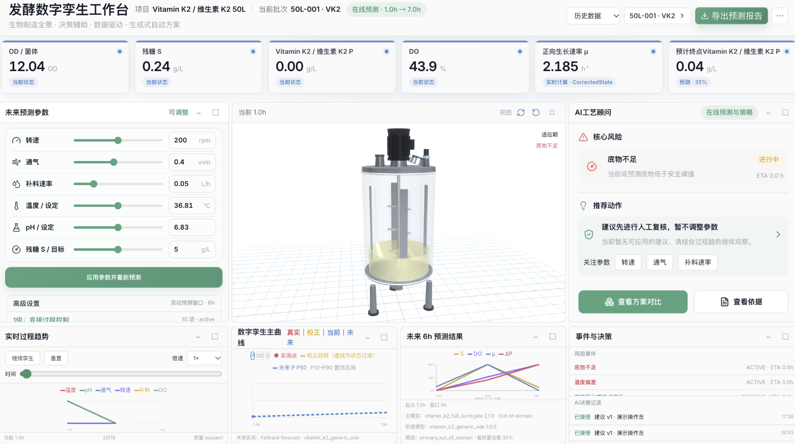

给每个批次建立数字孪生，实时镜像过程演进，推演补料策略、对比多种优化方案，在动手前先算清结果。
拨打 电话，或留下需求，我们 1 个工作日内回电。
Capabilities
用可推演的数字模型，替代“先试错再调整”的批次经验。
贴近真实发酵动态，忠实还原每个批次。
多种补料与策略模拟对比，给出建议与解释。
历史批次回放与滚动预测，先复盘再优化。
Workflow
对接现有批次 / 采集数据，建立数字化基线。
让数字孪生持续跟随真实批次。
推演补料与多方案，把结果交给您拍板。
Product
补料推演、批次镜像、方案对比，都在一个界面里完成。

留下联系方式，我们带着演示与方案和您对接。
或直接拨打 电话